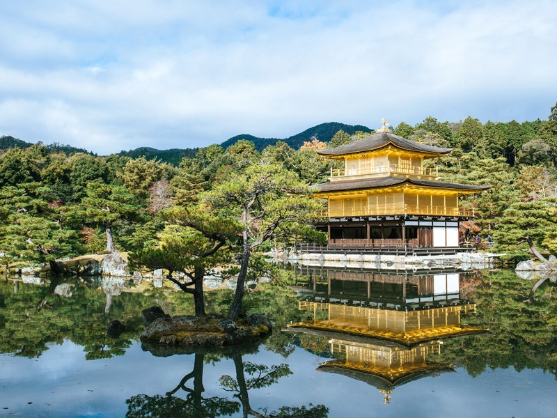
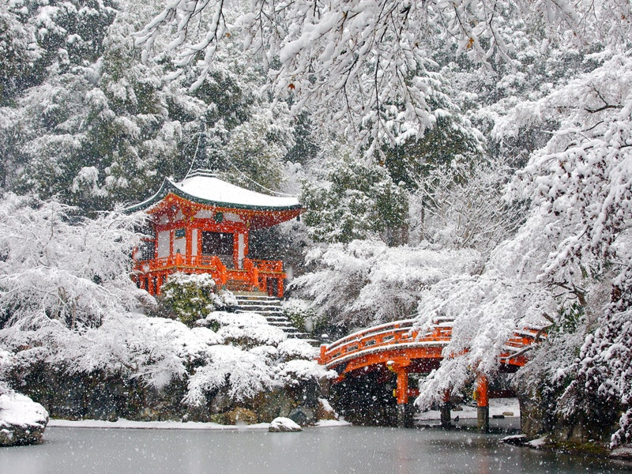
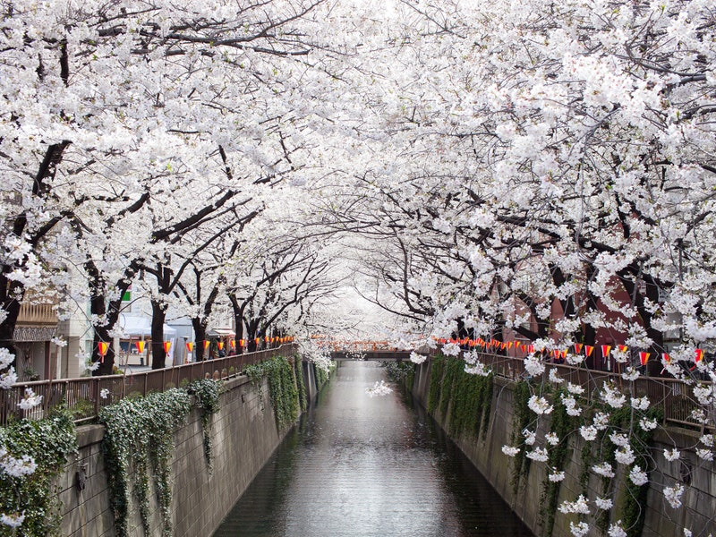
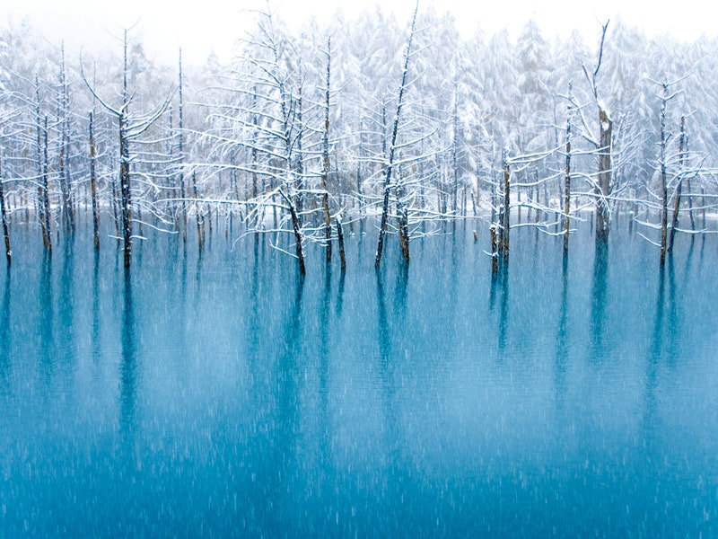

KYOTO

Kinkaku-ji
Kinkaku-ji officially named Rokuon-ji is a Zen Buddhist temple in Kyoto, Japan
Read the story

Daigo-ji Temple
Daigo-ji (醍醐寺, Daigo-ji) is a Shingon Buddhist temple in Fushimi-ku, Kyoto, Japan
Read the story
Arashiyama Bamboo Grove
Bamboo Forest, or Arashiyama Bamboo Grove or Sagano Bamboo Forest, is a natural forest of bamboo in Arashiyama, Kyoto, Japan.
Read the storyTOKYO
Imperial Palace
The Tokyo Imperial Palace is the usual residence of the Emperor of Japan.
Read the story

Meguro River
The Meguro River (目黒川, Meguro-gawa) is a river which flows through Tokyo, Japan
Read the storyHOKKAIDO

Blue Pond
Blue Pond (青い池, Aoi-ike) is a man-made pond feature in Biei, Hokkaido, Japan.
Read the story
Lake Kussharo
Lake Kussharo is a caldera lake in Akan National Park, eastern Hokkaidō, Japan.
Read the story